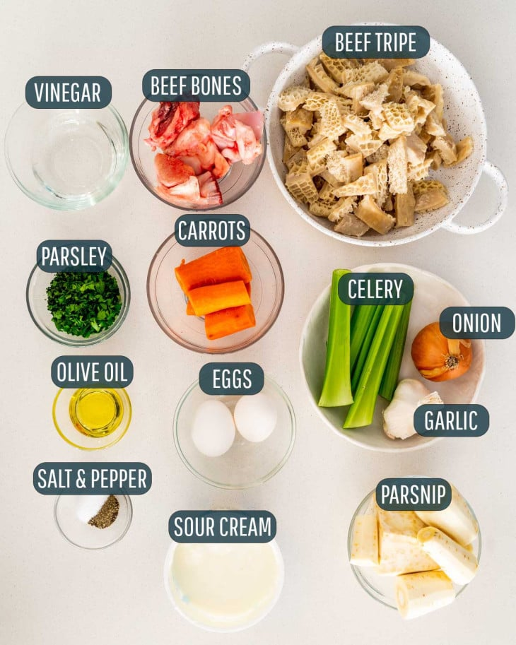
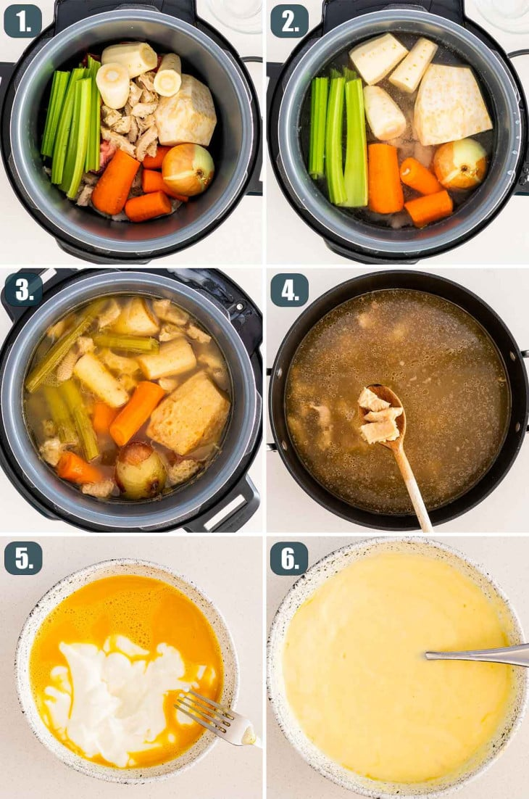

Tripe Soup
The Tripe Soup s a traditional Romanian soup made with beef tripe, garlic, sour cream, eggs and
vinegar. With an amazing creamy texture, it’s one dish that any true foodie must try.
Tripe Soup
While I don’t have too many Romanian recipes, I do have a few that I’m really proud of, and this tripe soup is
one of them. Tripe soup, known as “Ciorba de Burta” in Romanian, is quite a popular soup in Romania and they
serve it at restaurants everywhere. There are many different types of “Ciorba” and they are actually soups made
sour by the addition of vinegar or lemon juice.
Tripe is one of those ingredients that many of us are skeptical of trying and, trust me, I was one of those
people. Not only that, but I won’t eat tripe any other way than in this soup. It’s a soup I first tried in my
first visit to Romania and I really fell in love with it. Since then I’ve made it my mission to learn to make it
myself by talking to all Romanian people I know and getting the recipe from them and after years and years of
trying, I can honestly say that my husband and I perfected it.
Ingredients Notes

- Tripe: In my experience, when buying tripe in grocery stores, it already comes white and
cleaned. Even so, I still like to run it through water and rinse it a few times.
- Beef Bone: You don’t need a big piece for this soup, just a couple small pieces, it will
really flavor the broth nicely.
- Vinegar: Just regular white vinegar. This is a must ingredient for this soup and I wouldn’t
replace it or substitute with anything else here.
- Vegetables: We are going to use parsnip, carrots, onion and celery or celery root to bring
some seriously delicious flavors to our tripe soup. I don’t find celery root often in grocery stores, so I
alway use celery instead.
- Sour Cream: Aim for at least a 2% fat index in your sour cream to bring a nice creamy
texture to the soup.
- Eggs: We will be using large eggs to blend with the sour cream. This will also aid in
giving the soup that creamy texture.
- Garlic: Minced fresh garlic will help bring the authentic Romanian flavor to this dish.
- Seasoning: Salt and pepper to taste.
How to make:

- Cook the ingredients: In a big pot, add the tripe, beef bones, carrots, celery, onion,
parsnip and water. Bring to a boil then reduce heat to medium and cook for 2 to 3 hours or until the tripe
is tender.
- Prep the tripe and soup: Transfer the bones and the vegetables from the soup, only the
tripe pieces should be left. Shred the boiled carrots. In a small pan add a tbsp olive and sauté the carrots
for 2 to 3 minutes.
The carrots are what’s going to give the soup that nice yellow color.
- Finish the soup: In a small bowl whisk the eggs with the sour cream. Add a ladle of the hot
broth to the egg mixture and stir, repeat this another 2 or 3 times.
Pour this mixture back into the soup
and stir. Add the sautéed carrots, the minced garlic and the vinegar to the soup and stir. Season the soup
with salt and pepper to taste.
Make sure you taste it and if you require more vinegar feel free to add more.
I prefer mine with a bit more vinegar, but this is something that each person can add to their bowl, instead
of adding it to the whole soup, so don’t over do it.
- Serve: Garnish with parsley and serve hot with additional sour cream and hot peppers such
as red chilies whether pickled or fresh.
Tips
- Clean the tripe under running water thoroughly and remove any fat or extraneous membranes of the stomach.
Make sure to be gentle and go deep into those nooks and crannies to clean out any and all impurities. As
I’ve mentioned above, usually the tripe sold in stores is already white and quite clean, I still wash mine.
I’ve also used vinegar and salt to clean the tripe and scrub it really well. It all depends on what it looks
like.
- Use a bowl filled with room temperature water to rinse if you prefer to not rinse the tripe in the sink.
- Make sure to leave the veggies whole while boiling them so it will be easier for you to scoop them out once
their part in the recipe is over.
- You can add extra sour cream after the soup is ready, to give it even more of that creamy texture and to
tamper with the sourness from the vinegar.
- You can easily make this in an Instant Pot by adding all the ingredients as mentioned in
Step 1 of
instructions and cooking for 30 minutes on high pressure then follow the rest of the instructions to finish
making the soup.
- This tripe soup can also be made in a Slow Cooker, the same way by adding all the
ingredients in a slow
cooker as mentioned in step 1 and cooking on low for 6 to 8 hours or high for 4 hours. Finish the soup by
following the rest of the ingredients as specified in the recipe card.
Storing Leftover Tripe Soup
After letting the tripe soup cool down completely, you can store the soup in an airtight container, preferably a
glass one, in the fridge for up to 3-4 days.
Reheating
Reheating is quite easy! Use either your microwave, stirring every 30 seconds or so, or transfer the soup to a
pot on the stove-top. Reheat, stirring occasionally, over medium-high heat until warmed through.
Freezing
Let the soup fully cool down to room temperature before freezing. Transfer to an airtight container and this soup
will last 3-4 months frozen.
To make reheating easier, let the soup thaw overnight in the fridge. You can reheat straight from the freezer,
but you will just have to be careful and stir often to break up the ice.
Check out the full recipese here!